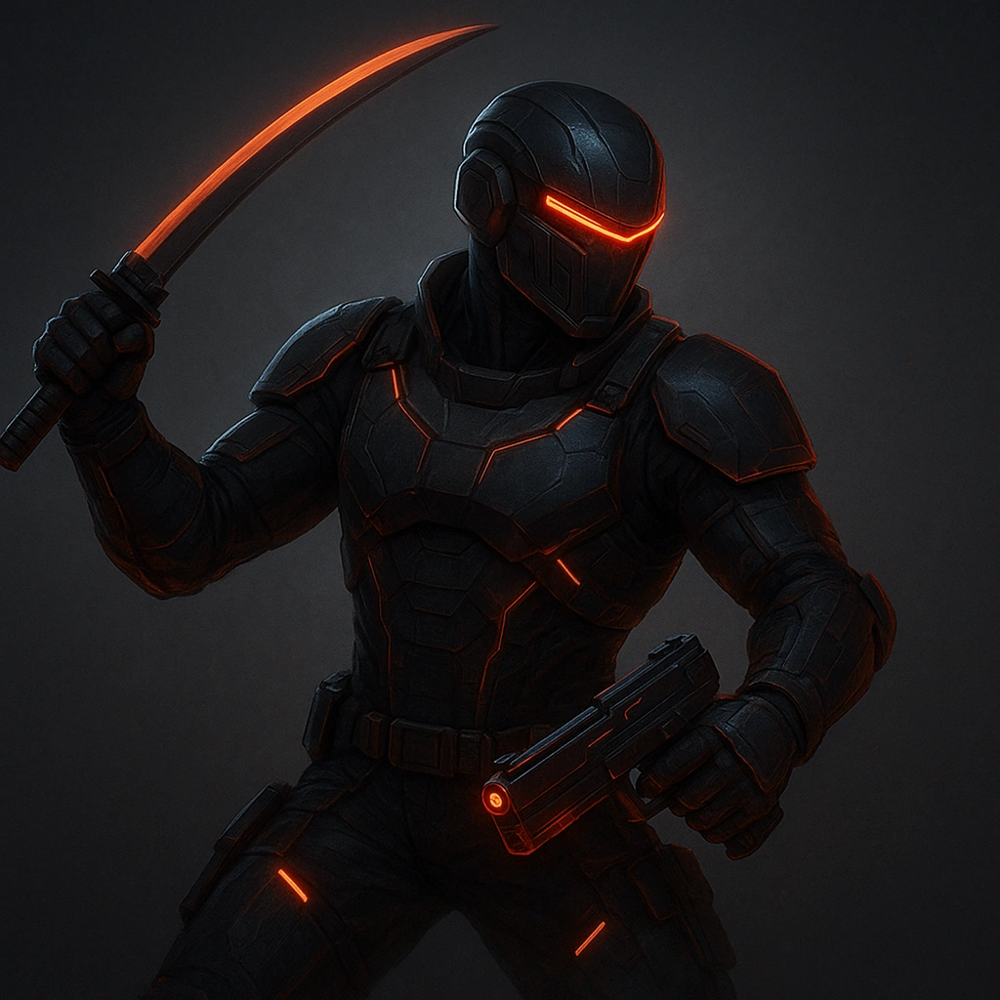

Mercenary¶
Description¶
You don’t fight for free—but you always fight for something. You are the weapon that other weapons dream of becoming. You’ve mastered every trigger, every blade, every angle of lethality that the modern world can manufacture. Guns, swords, drones, fists — it doesn’t matter. In your hands, everything becomes a tool of precision and inevitability. You didn’t choose this life; you refined it. Maybe you came from the military, the corps’ private armies, or one of the syndicates where “promotion” is measured in blood. Maybe you just learned early that violence pays better than honesty. Either way, you’re a professional now — calm under fire, fluent in fear. You don’t kill for fun. You kill for order. For balance. For the code you’ve written into your bones — the rules that keep you from becoming the monsters you hunt for a paycheck. Every job starts with three questions: Who’s paying? What’s the risk? And can you still look in the mirror afterward? If the answers don’t matter anymore… maybe it’s time to hang up the gun.
Features¶

Gun trainer — Foundation:As a downtime action you train each of your allies to better use their guns.
Give each ally a Bullet die appropriate to your Tier (Tier 1: d4, Tier 2: d6, Tier 3: d8, Tier 4:d10).
They may roll this Bullet die whenever they make an attack with a gun and add the result to their attack roll.
Resolve — Foundation:You gain a pool of dice called Bullet dice. Whenever you fail an attack roll with Fear, add a d6 to your Bullet die pool. You can store a number of Bullet die equal to your proficiency. When you make an attack roll or damage roll, you can spend any number of these Bullet Dice, rolling them and adding their result to the total. At the start of each session, clear any unspent Bullet Dice and gain 1 Hope per die cleared.

You’re in my sights — Specialization:Spend 1 Hope to make an adversary within Very Close your Primary Target. If that adversary attempts to leave Very Close range, you may move with them automatically on their Action. +2 to all your attacks and damage against that Primary Focus
- 
Whirlwind — Mastery:Once per Scene, if you are wielding a melee weapon and gun (both of which must be one-handed), Spend 4 Hope to make 2 attacks with each against different targets (4 targets total – if there are not enough targets, you cannot use this ability).
Heavy Ordinance — Specialization: You are able to use any type of weaponry including heavy military ordinance that no other PC can normally use.